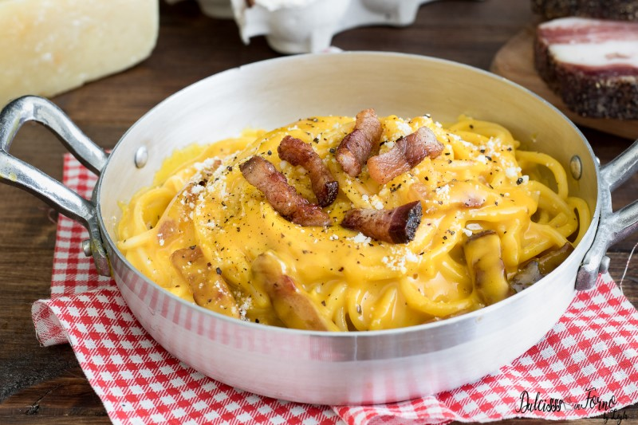

Carbonara
Home
Carbonara

Carbonara is a classic Italian pasta dish from Rome, known for its creamy sauce made
Ingredients
- 200 g spaghetti or other pasta
- 100 g pancetta or guanciale, diced
- 2 large eggs
- 50 g Pecorino Romano cheese, grated
- 50 g Parmesan cheese, grated
- Freshly ground black pepper
- Salt to taste
Instructions
- Cook the pasta: Bring a large pot of salted water to a boil and cook the pasta according to the package instructions until al dente. Reserve some pasta water before draining.
- Cook the pancetta: In a large skillet, cook the diced pancetta or guanciale over medium heat until crispy. Remove from heat and set aside.
- Prepare the sauce: In a bowl, whisk together the eggs, Pecorino Romano, Parmesan, and a generous amount of black pepper.
- Combine: Add the cooked pasta to the skillet with the pancetta and toss to combine. Remove from heat and quickly pour in the egg and cheese mixture, tossing continuously to create a creamy sauce. If needed, add reserved pasta water a little at a time to reach desired consistency.
- Serve: Plate the carbonara immediately, garnishing with extra cheese and black pepper if desired.